Префектура Миэ · Кувана · история
Кувана: город на Токайдо, где история читается по улицам, мечам и карпу
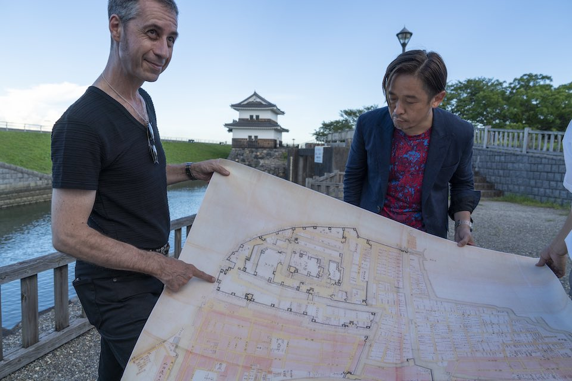
Кувана была 42-й станцией дороги Токайдо и воротами в провинцию Исэ. Здесь стоял замок одного из самых надёжных вассалов Токугава, а следы эпохи Эдо до сих пор видны в планировке улиц, храмах и старых лавках.
Город
Ворота в провинцию Исэ
Кувана стоит на севере префектуры Миэ, в устье трёх больших рек. С давних времён это был портовый город, а в эпоху Эдо он стал сразу призамковым городом рода Мацудайра с доходом 110 тысяч коку риса и почтовой станцией на Токайдо, главной дороге между Эдо и Киото. Для любителей японской истории Кувана почти обязательный пункт: многое из той эпохи можно пройти пешком.
Осенью 2019 года город обошли двое таких любителей: японский рэпер и продюсер, который в гастрольных поездках всегда ищет замки и старые поля сражений, и радиодиджей из Австралии, который так увлёкся историей самураев, что пошёл в ученики к мастеру доспехов и сделал себе доспех сам. Оба бывали в Кувана не раз, но, по их словам, каждый приезд открывает в городе что-то новое.
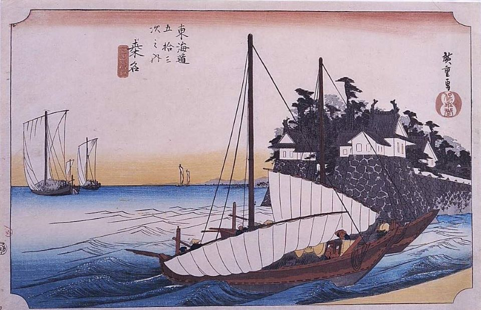
Хиросигэ Утагава (1797–1858) был одним из главных мастеров японской гравюры укиё-э, а его серия о станциях Токайдо стала самым известным изображением этой дороги. На гравюре видно, что лодки переправы были деревянными парусниками.
История
Почему Иэясу поставил сюда лучшего вассала
Главная страница истории Куваны относится к концу эпохи воюющих провинций. В 1600 году Иэясу Токугава (1543–1616), будущий основатель сёгуната Токугава, победил при Сэкигахаре, но в Осаке ещё оставался Хидэёри Тоётоми (1593–1615), сын прежнего правителя страны, и положение было шатким. На Токайдо, в Кувану, Иэясу отправил Тадакацу Хонду (1548–1610), одного из «четырёх небесных королей», то есть четырёх самых прославленных полководцев рода Токугава. Тадакацу стал первым князем Куваны: он перестроил замок и призамковый город, наладил работу почтовой станции и заложил основу нынешних улиц. Эту планировку до сих пор называют «разметкой эры Кэйтё».
Почему именно сюда? Кувана лежит в устье трёх рек, Кисо, Нагара и Иби, поэтому все речные грузы проходили через неё, а всё, что приходило с моря, отсюда уходило вглубь страны. Море здесь встречалось с сушей, а на Токайдо сходились восток и запад. Это был узел вроде Стамбула между Азией и Европой.
Другого полководца из той же четвёрки, Наомасу Ии (1561–1602), Иэясу поставил в Хиконэ, на другой важной дороге. Линия Кувана и Хиконэ стала главным рубежом, который не давал роду Тоётоми продвинуться на восток. Иначе говоря, от Куваны зависело управление всей страной.
Когда в 1615 году после осадных кампаний в Осаке род Тоётоми погиб, Хонда перевели в Химэдзи, а в замок Кувана вошёл Садакацу Мацудайра (1560–1624), единоутробный младший брат Иэясу. Для сёгуна город по-прежнему оставался очень важным.
Переправа
Ситири-но ватаси и первые ворота Исэ
С наступлением мирной эпохи Эдо по всей Японии распространились паломничества в святилище Исэ, и Кувана, ворота в провинцию Исэ, наполнилась путниками с Токайдо. Между 41-й станцией Мия-дзюку и 42-й станцией Кувана дорога шла морем: это был единственный морской отрезок Токайдо. Расстояние составляло семь ри, поэтому переправу назвали Ситири-но ватаси, «переправа в семь ри». Большие ворота-тории у пристани Куваны называли «первыми тории» провинции Исэ: за ними начиналась дорога к святилищу.
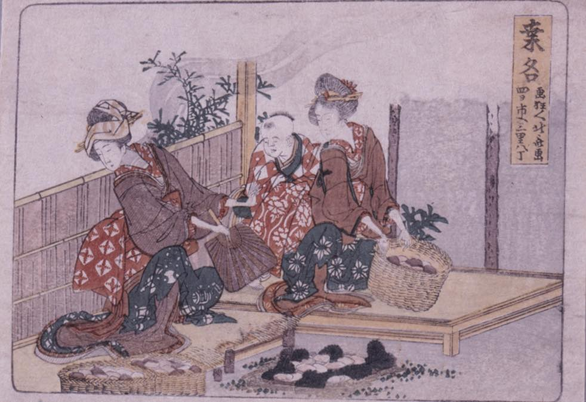
Хокусай Кацусика (1760–1849) это самый известный в мире японский художник укиё-э, автор «Большой волны в Канагаве».
«Подумать только, под этими тории проходили князья со своими свитами по дороге в Эдо и обратно»
рэпер
«Кувана насквозь пропахла эпохой Эдо. Здания много раз горели в войнах, но по планировке, старой дороге, памятникам и старым картам можно собрать в голове, каким был город в лучшие времена»
рэпер
Квартал вокруг бывшей переправы хорошо сохранил облик старой Токайдо. Передохнуть можно в маленьком кафе «Сюкуба-но тямисэ Хадзимэ» прямо напротив тории.
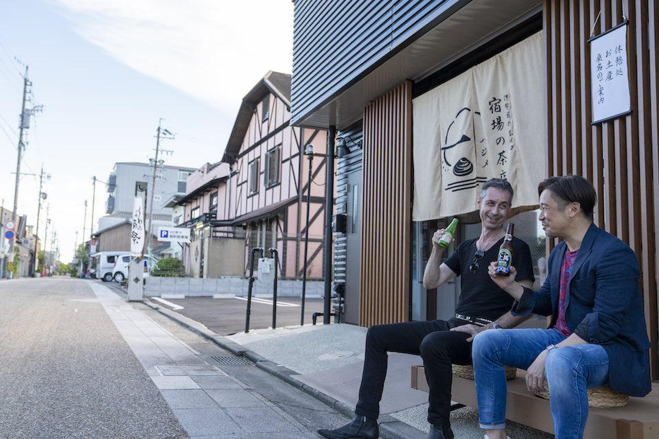
Святилище
Тадо-тайся: «северное Исэ» и скачки в гору
Святилище Тадо-тайся основано примерно в V веке. С древности священным телом его божества считается гора Тадо, и святилище почитали и при дворе, и простые люди. В эпоху Эдо паломники к Исэ заходили и сюда, а святилище называли «северным Исэ». В годы Кэйтё (1596–1615) его восстановил Тадакацу Хонда. Тогда же сложилась песня: кто идёт в Исэ, пусть заглянет и в Тадо, иначе паломничество будет лишь наполовину.
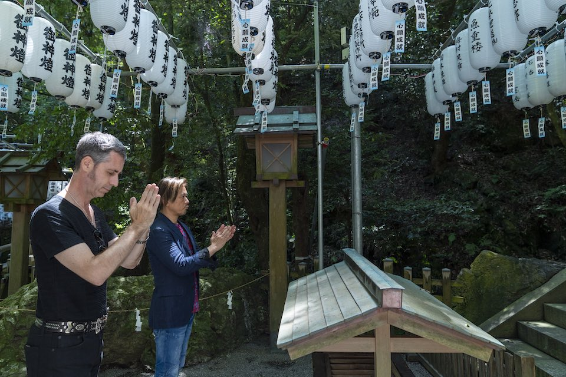
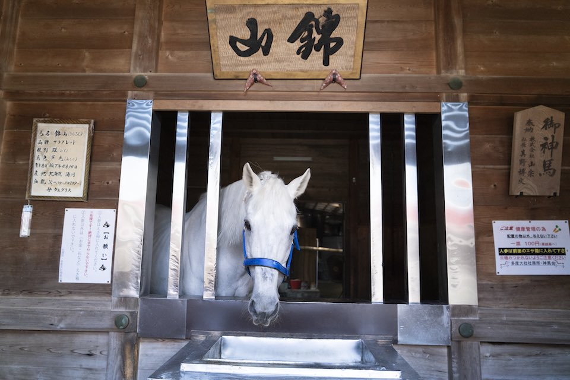
Каждый год в мае здесь проходит обряд агэума: молодые всадники в одежде воинов пытаются верхом взлететь на крутой склон.
Святилище Тадо-тайся
- Адрес
- префектура Миэ, Кувана, Тадо-тё Тадо, 1681
- Телефон
- +81 120-37-5381
Кухня
«Дайкокуя»: карп с середины эпохи Эдо
У святилища Тадо, в его храмовом городке, с середины эпохи Эдо работает ресторан карпа «Дайкокуя». Всё началось около 280 лет назад: тогдашняя хозяйка заметила речную рыбу, которую выгружали на пристанях трёх рек. Купленных карпов здесь выпускают в пруд, куда поступает подземная вода с горы Тадо, и три недели не кормят. Так уходит запах тины, мясо становится сладким и плотным.
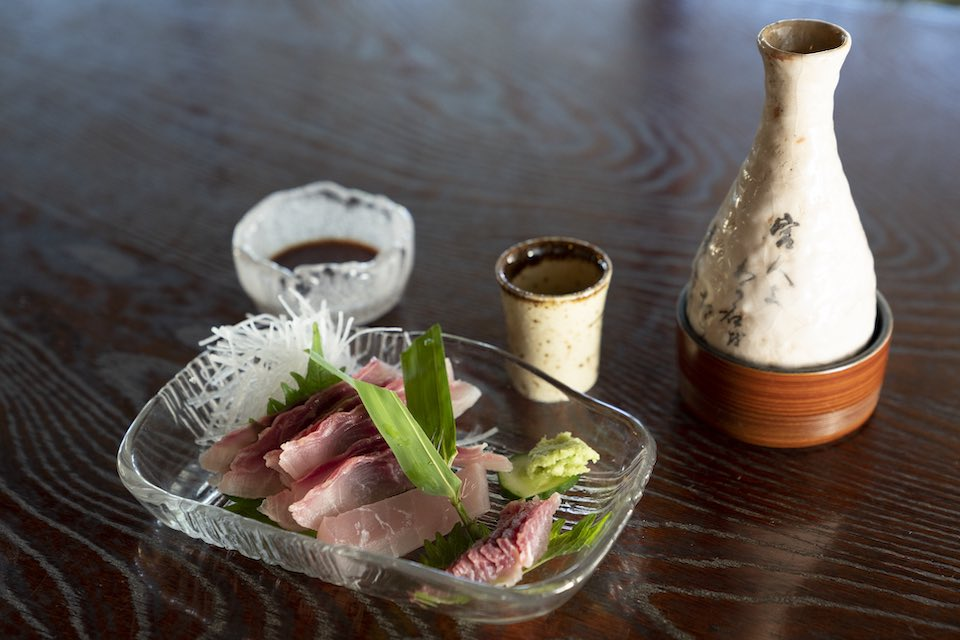
Ресторан любили многие известные люди, и среди них писатель Сётаро Икэнами (1923–1990), автор исторических романов и знаменитых эссе о еде. Здесь можно понять, каким бывает настоящий вкус карпа: кроме «араи» готовят тушёного карпа с икрой и «кои-коку», суп из карпа на белом мисо.
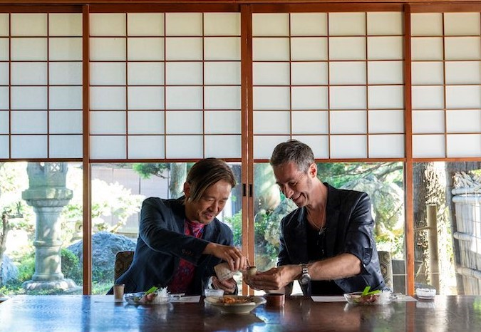
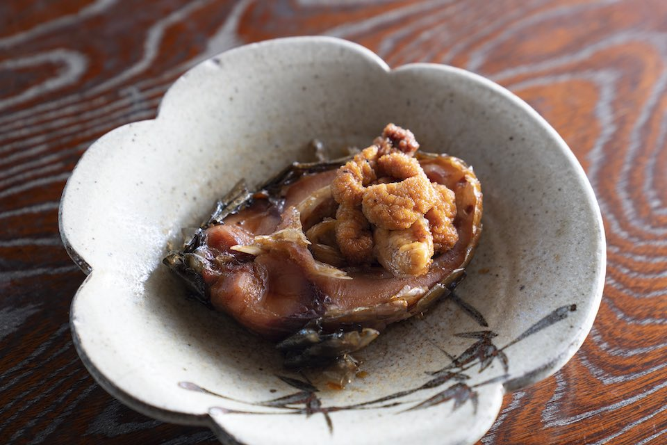
В саду есть пруд, питаемый подземной водой горы Тадо, и смотреть на него из-за стола очень спокойно.
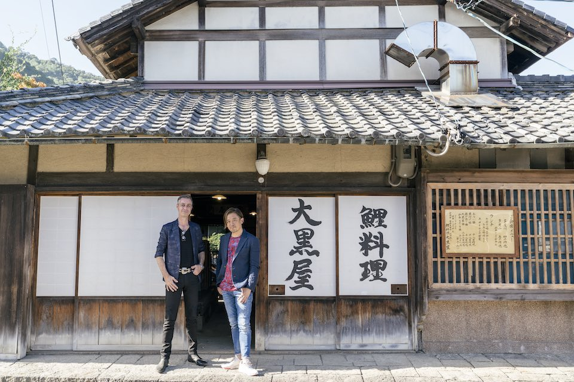
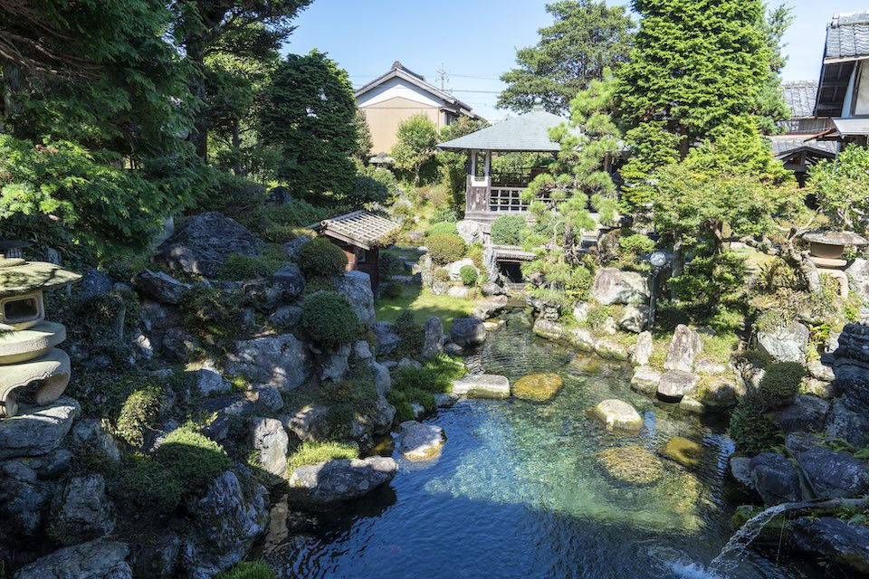
«Дайкокуя»
- Адрес
- префектура Миэ, Кувана, Тадо-тё Юи, 1799
- Телефон
- +81 594-48-2018
Мечи
Мурамаса и городской музей
Ещё одно имя, от которого у любителей истории замирает сердце, это Мурамаса, оружейник, прославившийся в Кувана в XVI веке. Его клинки окружены легендой о «проклятых мечах Мурамаса», будто бы приносивших несчастья роду Токугава, и у поклонников японских мечей к ним особое отношение.
Городской музей Куваны хранит от 120 до 130 клинков, и основа собрания это мечи Мурамасы. Здесь же документы о Тадакацу Хонде, о князе Саданобу Мацудайре (1759–1829), известном реформаторе управления сёгуната, и о княжестве Кувана, а также картины, связанные с городом, и керамика Банко. По этим вещам удобно изучать историю Куваны целиком.
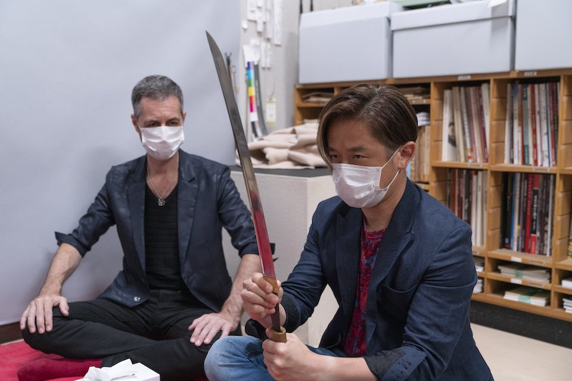
«Я чувствую тяжесть больше, чем весит сам меч»
рэпер
«Тати, которыми в эпоху воюющих провинций сражались в доспехах верхом, изогнуты сильнее. У катаны и короткого вакидзаси, которые самураи носили в эпоху Эдо, изгиб другой, и это очень интересно»
радиодиджей
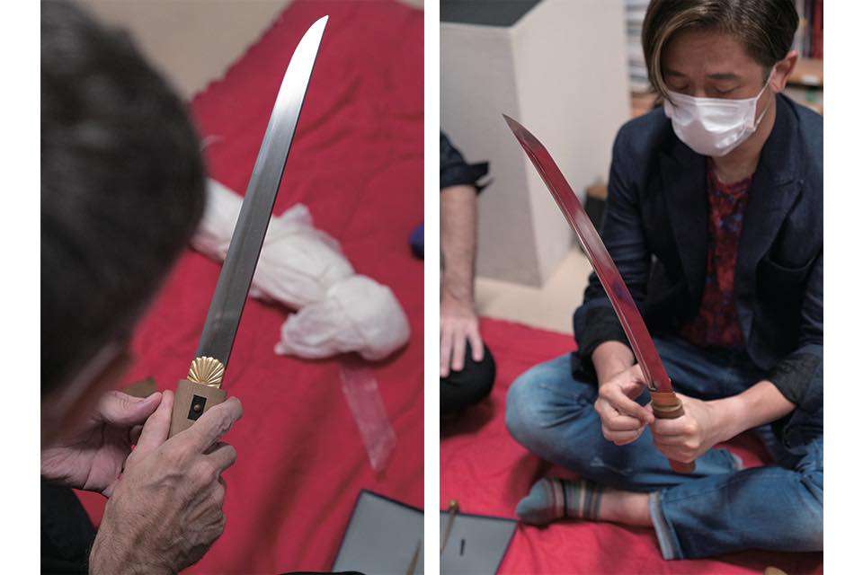
«Японские самураи жили не одной войной: они занимались чайной церемонией и каллиграфией, ценили искусство. В мече, доспехе и замке красота и польза существуют вместе. Японцам стоит гордиться этим больше»
радиодиджей
Городской музей Куваны
- Адрес
- префектура Миэ, Кувана, Кёмати, 37-1
- Телефон
- +81 594-21-3171
Сладости
«Эймотия»: рисовые лепёшки с 1634 года
Главная сладость Куваны это «ясунага-моти», и за ней идут в «Эймотия», лавку, основанную в 1634 году. Клейкий рис распаривают и толкут, заворачивают в тесто домашнюю пасту из бобов и вытягивают в длинную лепёшку. Когда-то её называли «томоти» и «бычьим языком», и она подкрепляла путников на Токайдо. Готовят её по-прежнему по старому способу.
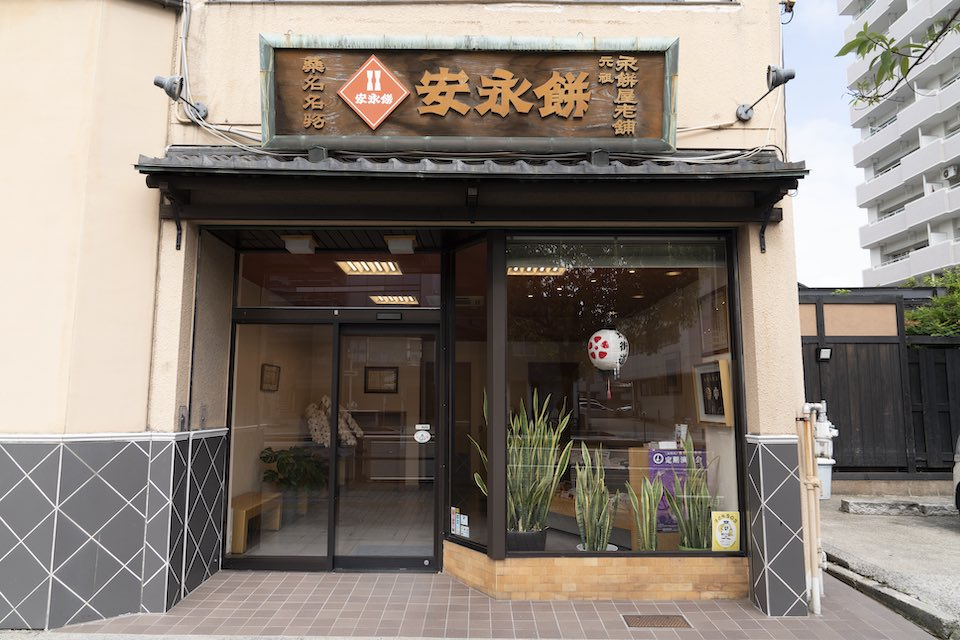
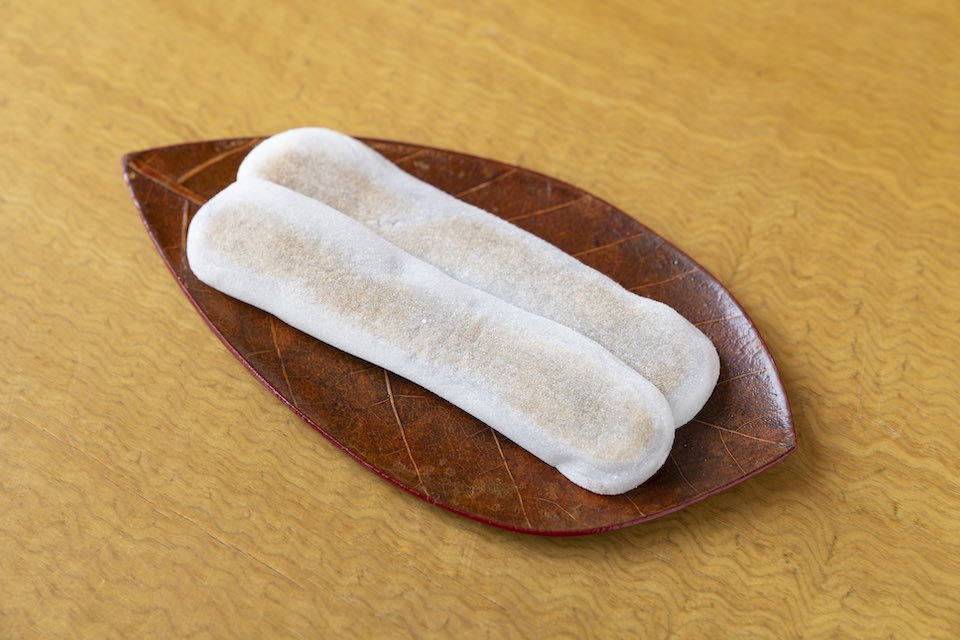
«Эймотия»
- Адрес
- префектура Миэ, Кувана, Юраку-мати, 35
- Телефон
- +81 594-22-0327
Храмы
Сёгэн-дзи и Кайдзо-дзи
Храм Сёгэн-дзи это семейный храм князей Мацудайра, где покоятся правители Куваны. Его основал Садаюки Мацудайра (1587–1668), сын и наследник Садакацу, в память об отце, третьем князе Куваны. Храму около 400 лет. Ворота сохранились с момента основания и охраняются городом как культурное наследие, а парная сосна «Мэото-мацу» в его ограде входит в список ста лучших сосен Японии.
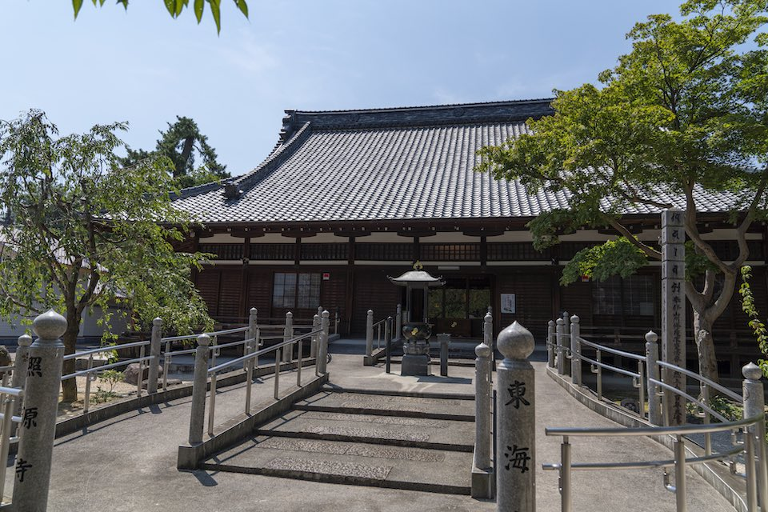
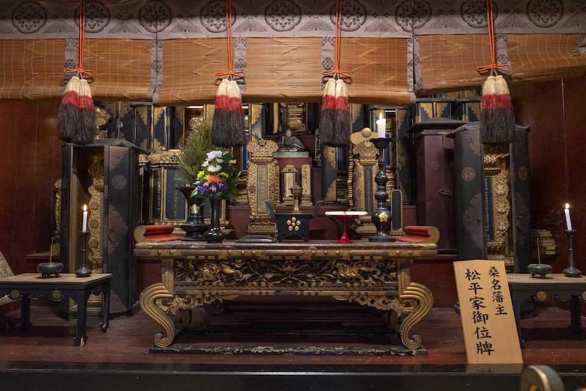
Храм Сёгэн-дзи
- Адрес
- префектура Миэ, Кувана, Хигасиката, 1308
- Телефон
- +81 594-22-3924
Храм Кайдзо-дзи хранит память об одной из самых тяжёлых строек эпохи Эдо. Реки Кисо, Нагара и Иби постоянно разливались, и в 1754 году сёгунат приказал княжеству Сацума на юге Кюсю укротить их. Работы, известные как «регулирование рек эры Хорэки», шли очень трудно: многие самураи Сацумы покончили с собой или умерли от болезней. На кладбище храма стоят 24 их надгробия.
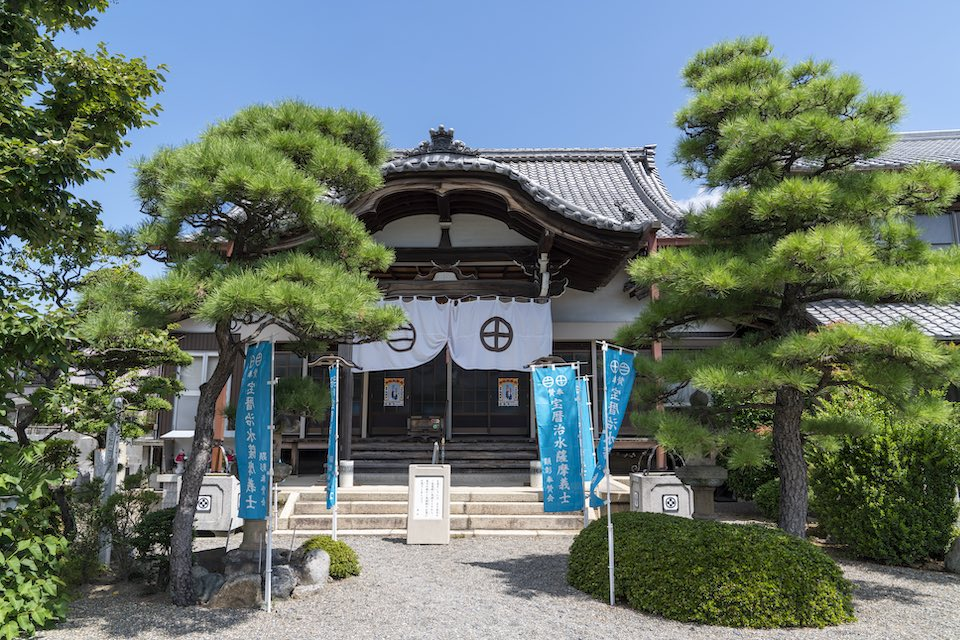
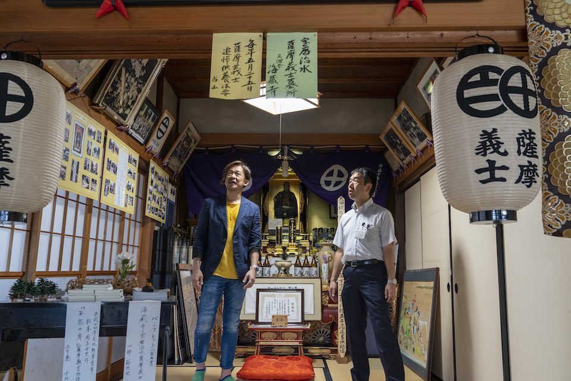
Храм Кайдзо-дзи
- Адрес
- префектура Миэ, Кувана, Китатэра-мати, 10
- Телефон
- +81 594-22-3274
Фото: Ацуси Ямахира.